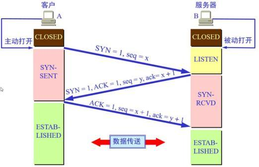

浏览器渲染页面的过程
浏览器渲染页面的过程
从 URL 输入到页面展现到底发生了什么？
具体可参考《How Browsers Work》
简单路径线：
键盘或触屏输入URL并回车确认
浏览器查看缓存，如果请求资源在缓存中并且新鲜，跳转到转码步骤
如果资源未缓存，发起新请求
如果已缓存，检验是否足够新鲜，足够新鲜直接提供给客户端，否则与服务器进行验证。
- 检验新鲜通常有两个 HTTP 头进行控制
Expires和Cache-Control：
- HTTP1.0 提供 Expires，值为一个绝对时间表示缓存新鲜日期
- HTTP1.1 增加了 Cache-Control: max-age=,值为以秒为单位的最大新鲜时间
- 检验新鲜通常有两个 HTTP 头进行控制
浏览器解析主机名
浏览器查询主机名的IP地址（DNS），过程如下：
- 浏览器缓存
- 本机缓存
- hosts 文件
- 路由器缓存
- ISP DNS 缓存
- DNS 递归查询（可能存在负载均衡导致每次 IP 不一样）
浏览器解析端口号
浏览器发起TCP连接（三次握手）
浏览器向服务器发送一条HTTP GET报文
服务器向浏览器返回一条HTTP相应报文
关闭连接，浏览器解析文档
如果文档中有资源，重复6~8步骤，直至资源全部加载完毕
TCP三次握手
（1）首先客户端向服务器端发送一段TCP报文
（2）服务器端接收到来自客户端的TCP报文之后，结束LISTEN阶段。并返回一段TCP报文。
（3）客户端接收到来自服务器端的确认收到数据的TCP报文之后，明确了从客户端到服务器的数据传输是正常的，结束SYN-SENT阶段。并返回最后一段TCP报文。

浏览器渲染的步骤
浏览器渲染的步骤：
- 处理HTML标记并构建DOM树
- 处理CSS标记并构建CSSOM树
- 将DOM与CSSOM合并成一个渲染树
- 根据渲染树来布局，计算每个节点的布局信息
- 将各个节点绘制到屏幕上
首屏页面渲染优化
缩小webpack或者其他打包工具生成的包的大小，尽可能的减少生产环境下依赖的库数量，尽可能的按需引用，减少无用代码占的空间。可以使用
webpack-bundle-analyzer的分析工具使用服务端渲染的方式
使用预渲染的方式
脚本异步执行
按照页面或者组件分块懒加载
配置很简单，只需要在vue-router中添加一些简单的配置即可。
import Vue from 'vue' import Router from 'vue-router' Vue.use(Router); export default new Router({ mode: 'history', linkActiveClass: 'router-link-active', routes: [ { path: '/', // 这里只需要把原来从外部引入的组件换成以下的语句就可以了 component: resolve => require(['../components/(你的组件)'], resolve) }, ] })
参考
本博客所有文章除特别声明外，均采用 CC BY-SA 4.0 协议 ，转载请注明出处！